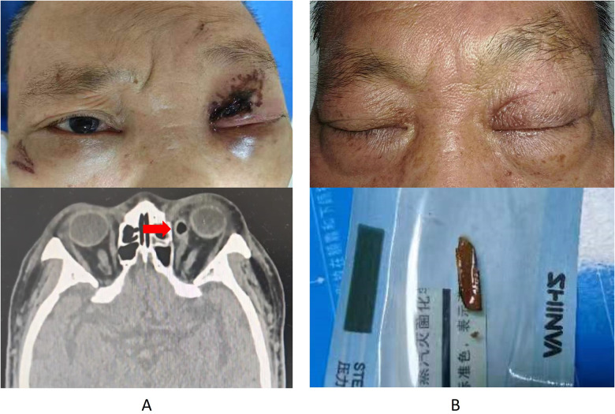
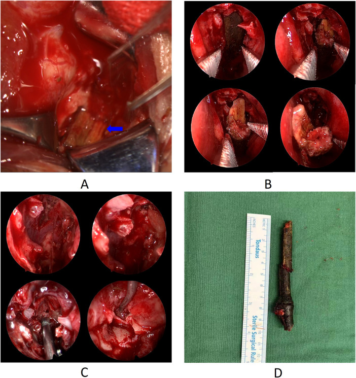

Wooden foreign body on CT: the scan said gas, it was bamboo
A man fell face-first and felt something small go into his eye. The scan reported air in the soft tissue. The air was a bamboo stick running from his eye socket to the back of his throat, and it stayed there for five more days.
The fall
On an April evening in 2024, a 67-year-old man fell face-first and felt what he described as a small object enter his left eye. He had immediate pain, bleeding and blurred vision, and went to his local hospital.
The CT there showed soft tissue injury on the left side of the face, contusion of the eyeball and the medial rectus muscle, fractures of the maxillary sinus roof and the medial orbital wall, blood in the maxillary and ethmoid sinuses — and pathological gas formation.
He was transferred for surgery, where debridement exposed a wound 5 mm deep and a small wooden fragment was removed. The wound was sutured. It healed without infection.
Why the scan was wrong
Dry wood is very low in density. On CT it can look like air, fat or muscle, and a linear tract of wood inside the orbit reads convincingly as a streak of trapped gas. This is a documented and recurring trap in orbital trauma, and it is why organic foreign bodies are missed in a way that metal and glass are not.
The initial report was not careless. It was the expected reading of that image. What made it wrong was that nobody yet suspected a foreign body long enough to produce a tract of that shape.

The signs that something remained
During his admission he kept producing purulent discharge from the conjunctiva at the inner corner of the eye. The conjunctiva was swollen and breaking down, and the eye could not turn inward properly.
Infection that persists after a wound has otherwise healed is one of the strongest clues that an organic foreign body is still in place. Plant material is porous, carries organisms, and provokes continuous inflammation in a way that a clean metal fragment does not.
Five days after the injury, a repeat orbital CT showed the same low-density “gas” tracking from beside the medial rectus muscle toward the nasal cavity, with bone destruction along its path. That pattern is not what air does. Reconstructions in oblique sagittal, coronal and horizontal planes then showed the whole thing: an object entering at the inner corner of the eye, lying against the wall of the eyeball, and running back into the nasopharynx. Nasopharyngoscopy found the far end of it resting on the back wall of the throat.
Choosing the route
A team of neurosurgeons, ophthalmologists and ENT surgeons planned the removal together. The CT had shown the object's geometry: thin at the orbital end, thickest in the nasal cavity, tapering again toward the nasopharynx. By this point tissue had begun to heal around it.
Three routes were considered, and the reasoning behind rejecting two of them is the most transferable part of this case.
Back out through the orbit. This meant dragging the stick back along its entry path, past the damaged medial rectus, the sclera and the optic nerve, and reopening a conjunctival wound that had just been sutured. Rejected.
Forward through the nasopharynx. The space is narrow, the endotracheal tube is in the way, and the thick middle section was firmly wedged. Rejected.
Through the nasal cavity. This gave direct access to the widest part of the object, room to work under endoscopic vision, and no need to disturb the healing orbit. Chosen.
The removal
Under general anaesthesia, the surgeons first checked the orbit and found the tip of the stick stuck fast against the wall of the eyeball. It would not move.
Working through the left nostril, they found the middle of the object hidden behind the uncinate process, which they removed with a hook knife before retracting the middle turbinate. That exposed the stick crossing the nasal cavity toward the nasopharynx.
Rather than pull, they cut. Bone forceps divided the far end, and the nasopharyngeal portion came out, creating space. A vascular clamp then drew the rest downward along its own axis until the tip released from the orbit. The root was divided again, and the main body was delivered through the nose.
The principle underneath this is worth stating plainly: a long, brittle organic foreign body should be shortened and taken out in controlled pieces, not extracted whole along the path it made. Pulling risks snapping it and leaving fragments in tissue you can no longer see.
They then checked the ethmoid sinus, where the stick had torn through and shed debris, and cleared the fragments with a 70-degree endoscope. The main body measured nearly 10 cm even without the pieces already cut off. The medial rectus muscle was partly ruptured, and a small area of sclera had dissolved beneath its tendon, exposing choroid. This was irrigated and sutured with 8-0 absorbable sutures.
Intraoperative and endoscopic images from the removal, including the extracted bamboo stick measured against a ruler.

Recovery
He was given antibiotics, a steroid for inflammation, and a haemostatic agent. At three months his vision in the left eye had improved from 1.3 to 0.5 logMAR and intraocular pressure was normal. The eye still could not turn fully inward, but he reported no double vision, compensating with a small turn of his head. A retinal scar remained on the nasal side. The macula and optic disc were normal.
What this case teaches
An imaging report describes what the image shows, not what is in the patient. When wood is the object, “gas” is the expected error, and the finding that overturns it is usually clinical: an infection that will not settle after the wound has healed. Multiplanar reconstruction, not a single axial slice, is what makes the tract visible.